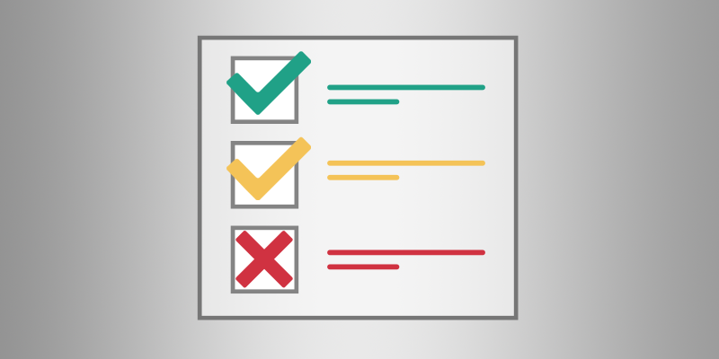

要件

Stride でプロジェクトを開発するには、次のものが必要です。
| 要件 | 仕様 |
|---|---|
| ハード ドライブの容量 | 5 GB |
| オペレーティング システム | Windows 7、8.1、10 |
| コード作成用の IDE | Visual Studio 2015、2017 |
| CPU | x64 |
| GPU | DirectX 10+ 互換 GPU |
| RAM | 4 GB (最低)、8 GB (推奨) |
RAM の要件は、プロジェクトによって異なります。
- 簡単な 2D アプリケーションを開発する場合は、それほど多くの RAM を必要としません。
- 多くのアセットを含む 3D ゲームを開発する場合は、大量の RAM が必要になります。
モバイル開発
モバイル プラットフォーム向けの開発には、以下のものも必要です。
| プラットフォーム | 要件 |
|---|---|
| Android | Xamarin* |
| iOS | Mac コンピューター、Xamarin* |
Note
- Xamarin は Visual Studio のライセンスに含まれます。Visual Studio 2017 で Xamarin をインストールする方法については、この MSDN ページを参照してください。
Stride がサポートするプラットフォームについては、「プラットフォーム」を参照してください。
Stride で作成したゲームを実行する
Stride で作成したゲームを実行するには、次のものが必要です。
- .NET 8 SDK
- DirectX11 (Windows 10 以降に含まれます)、OpenGL、または Vulkan
- Visual C++ 2015 ランタイム (Visual Studio でのプロジェクトのプロパティの設定に応じて、x86 および x64 のどちらか一方または両方)